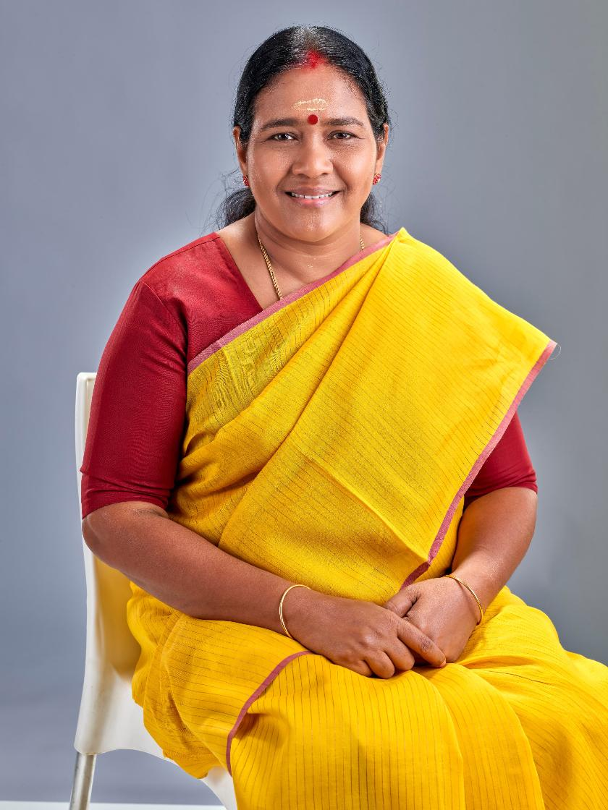

”
Her Story
From a schoolgirl shaped by early loss to Kerala's first woman to hold the position on national level. three decades organising village by village. As Mahila Morcha president she built the women's wing across all 140 constituencies, carrying the fight for dignity from tribal hamlets to the coast.
Sobha Surendran
BJP State General Secretary, Kerala

[ KERALA ] EST · 1991